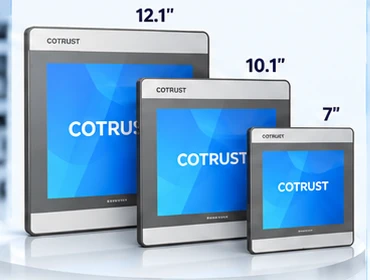
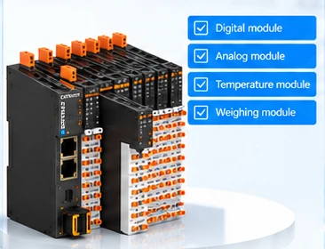
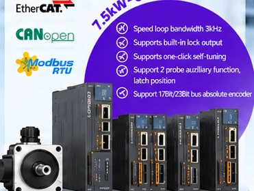

CTG Series HMI
Dokunmatik operatör panelleriMakine kontrolü, proses izleme ve operatör arayüzü uygulamaları.
Resmi ürün bilgileri ↗YK OTOMASYON olarak COTRUST ile iş birliğimiz kapsamında, Türkiye'deki makine üreticileri ve sanayi kuruluşlarına PLC, HMI, uzak I/O ve servo teknolojilerini tanıtıyoruz.

Makine kontrolü, proses izleme ve operatör arayüzü uygulamaları.
Resmi ürün bilgileri ↗
Makine otomasyonu, modüler I/O ve endüstriyel haberleşme çözümleri.
Resmi ürün bilgileri ↗
Dijital, analog, sıcaklık ve tartım sinyalleri için modüler I/O seçenekleri.
Resmi ürün bilgileri ↗
Konumlandırma, hız kontrolü ve servo motor uygulamalarına yönelik sürücüler.
Resmi ürün bilgileri ↗Ürün katalogları, yazılımlar ve teknik dokümanlar için COTRUST resmi web sitesini ziyaret edebilirsiniz. Gerçek uygulama ve tanıtım videolarını COTRUST YouTube kanalında inceleyebilirsiniz.
Ürün seçimi, sistem entegrasyonu ve teklif talepleriniz için YK OTOMASYON ile iletişime geçin.
İletişime geçin